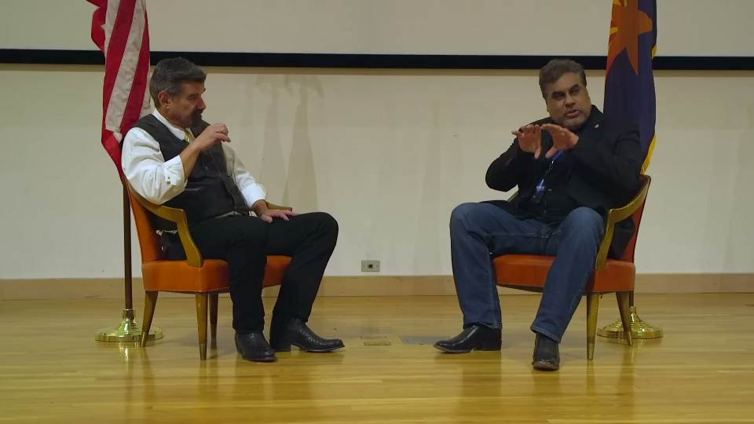
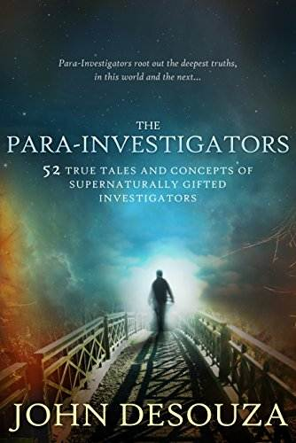

John Desouza（元 FBI 捜査官）の証言: 9.11 のツインタワー崩壊現場を捜査したが、航空機の残骸は皆無だった

履歴
(2023-03-05) 追加。切り出し動画追加。DeepL 訳追加。
(2023-02-20) 作成。John Desouza（元 FBI 捜査官）の証言: 9.11 のツインタワー崩壊現場を捜査したが、航空機の残骸は皆無だった （途中1） (2023-02-20)
前置き
貴重な、というより重大な証言。
他にも当初、 50000人の犠牲者を生じさせる予定だったが、…という状況が生じて 3000人の犠牲でおさまった…というような証言もしている。
あと、米国内で活動しているイスラム過激派を捜査していたら、なぜか W. Bush が FBI に電話をかけてきて圧力をかけ、捜査から外されたとも述べている。時間がとれれば別記事にしたいところだが…
なお、ホストとして彼の対談相手なった David Paulides が後日、「この公開対談会の動画は注目を浴び、大勢が視聴した」と別の動画で語っていた。さもありなん。
手抜き
9.11 のツインタワー崩壊現場を私自身も捜査に参加した。崩壊現場には航空機の残骸は皆無だった。現場の捜査員は誰一人、航空機の残骸を発見できなかった。
航空機の残骸を発見できたという NYT の報道記事があったが、我々がその取材元を調査すると奇妙なことに…
so we also worked uh the World Trade Center when it you know 911 as well okay so I 27:30 already know what the answer is but so on those big jets I don't know if people really understand this yeah but this the 27:37 tires and the wheel assembly systems on those Jets weigh tons and they're solid pieces of 27:46 Steel yeah how many wheel struts did they find in 27:51 the wreckage at 9 11. none none Q) 世界貿易センターが911になったとき、私たちも働いていたんです。 その答えはもうわかっているのですが、あの大きなジェット機では、みんなが本当に理解しているかどうかわからないのです。 ジェット機のタイヤとホイールアッセンブリーシステムは、何トンもの重量があり、頑丈な部品です。 スチール......ホイールストラットは何個見つかったんだろう？ 9 11で残骸を発見した。 A) 何もなかった。
切り出し動画
(視聴時には mute の解除が必要)
質疑応答から
- 9.11 に関する聴衆の質問（ビルに突入する航空機の映像と矛盾するのでは？）に対する彼の回答が下。
音声書写（自動生成）
▼展開
40:28 I would tell you if you want to find out more about 9 11 read my book The para investigators the para investigators 40:35 it's a good book yes sir in the back 40:42 we also have the video the planes crashing in the building how do we explain that 40:47 uh we explained that with technology that is further ahead than what we understand currently 40:53 uh they used something that was like Holograms uh but that I believe 41:01 um also had solidity to them they were more than more than just Holograms they 41:06 were um some kind of things that create that can also create sound and light and 41:15 uh solidity of some kind that that's how I would say that 41:49 that believed they ruled the Earth and that were doing 9 11. uh I believe they 41:55 were doing it as a ritual sacrifice as well uh to their dark gods and one thing 42:00 that I can that I can actually prove to people is that they if you look at all 42:05 the cctvs from that time if you look at all the internal cctvs you look at all 42:11 the stuff they were hoping they had arranged things uh in the few days 42:16 before 9 11 in order to make sure that they killed 50 000 people not three thousand like they 42:25 did they were hoping to get 50 000 people they had set up megaphones they 42:30 they had set up the speaker systems to with recorded devices uh like the 42:36 recorded message we just heard in here but their recorded messages were set up with everything is fine just go back go 42:44 back to your offices go back listen to security go back to your offices 42:50 everything is fine it's being taken care of you are safe and secure and they put 42:56 those on the speaker system just before 9 11 happened and then they instructed 43:01 all security Personnel that any emergencies come up always make people 43:07 go back to their offices always do not let them under any conditions let them 43:13 get out of the building because you'll be creating more danger for them if you let them get out so make push them back 43:20 in if we hadn't had every group every group that came down there was one 43:26 person that when they were confronted by security and security to hurt them back 43:31 one person would stand up and say get the hell out of our way we're coming through we're getting out of here and 43:38 then everybody would follow that person they'd get out that happened dozens of times in those buildings uh at every 43:46 time some one time it was a janitorial person another time it was a CEO of an accounting firm that was up there but it 43:53 was always one person that just stuck their head up and said there is no way we're going back up there no way you 43:59 better get out of our way right now and it always they always did and that's the only reason that only 3 000 were killed 44:06 that day but they were shooting for more all the way in the back security 44:23 for yourself in your own life yeah I've had many of them yes and I you
DeepL 原文不完全
9.11についてもっと知りたいなら、私の本「The para investigators パラ・インベスティゲーターズ」を読んでくださいと言いたい。 いい本です後ろのほうのイエスサー また、飛行機がビルに衝突する映像もありますが、これはどう説明すればいいのでしょうか。 ということを、現在の理解よりさらに先の技術で説明しました。 ホログラムのようなものを使っていたのですが......。 また、ホログラムのような立体感もあり、単なるホログラムではありません。 音や光も作り出せるような、ある種のものでした。 ある種の固さ......つまり、そういうことだと思います。 地球を支配していると信じ、9.11をやっていたのです。 は、彼らの暗黒の神々への儀式の生け贄としてやっていたのだ。 私が実際に人々に証明できるのは、「もし、あなたがすべてのものを見ているならば 当時のCCTVを見ると、すべての内部CCTVを見ると、すべてのCCTVを見ることができます。 数日の間に物事を整理していたことを期待していた。 9.11の前に、彼らは3千人ではなく5万人を殺したことを確認するためです。 5万人の観客を集めようと、メガホンを設置したのです。 というように、録音された機器をスピーカーにセットしていました。 録音されたメッセージを聞いたが、録音されたメッセージは、何も問題なく、ただ戻ってくださいと設定されていた。 オフィスに戻る セキュリティを聞く オフィスに戻る すべてうまくいっている、面倒を見てもらっている、安全で安心だ。 9.11が起こる直前、スピーカーシステムでこれらの情報を流し、その後、彼らは指示しました。 セキュリティ担当者は、緊急事態が発生した場合、常に人を集めています。 事務所に戻るのは、どんな条件でも、彼らにさせてはいけない。 というのも、外に出すとさらに危険な状態になるので、押し戻すようにするのです。 もし、すべてのグループに参加してもらわなければ、すべてのグループが1つの という人が、警備員と対峙したときに、警備員が彼らを傷つけ返すために 一人が立ち上がって、邪魔をするな、俺たちは通るんだ、俺たちはここから出ていくんだ、と言う。 そして、みんながその人の後をついていき、その人が外に出るということが、あの建物では何十回となく起こっているんですね。 ある時は掃除の人、ある時は会計事務所の社長がそこにいた。 が、いつも一人、頭を上げて、「もう戻れない」「もう無理だ」と言う人がいた。 今すぐ我々の邪魔をしない方がいい。いつもそうしてきた。それが、3000人しか殺されなかった唯一の理由だ しかし、その日、彼らは裏の警備室でずっと撮影していた。 自分の人生の中で、自分自身のために......そうですね、私もたくさんありました。
彼が言及している自著

パラ・インベスティゲーターとは、警察官、民間調査員、サイキック、ゴーストハンターなど、真相究明に関わる一般人のことです。彼らは超自然的な能力を使って、自分たちの存在をまだ受け入れていない社会を守り、奉仕しています。超能力者たちは、私たちの物理的な世界を超えた領域に足を踏み入れます。これらは、彼ら自身の言葉による真実の物語です。しかし、彼らを本当に理解するためには、パラ調査を可能にする概念を掘り下げる必要があります。真の捜査とは何か、真の証拠能力とは何か、そして彼らがどのように物質世界を超えた領域に踏み込んでいくのかを把握することが重要なのです。また、超能力があることを意識することなく、"パラ・インベスティゲーション "を行うこともあります。パラ・インベスティゲーションを理解することは、現在の現実ではまだ許容されていない、より大きな真実に心を開く鍵です。その扉が開けば、私たちはようやく、完全であるためには、ある調査が現世だけでなく来世の真実を明らかにしなければならないことを理解することになるでしょう。
THE PARA-INVESTIGATORS: Supernaturally Gifted Investigators Kindle Edition by John DeSouza (Author)
☑動画(49:54)
Missing 411 The UFO Connection, Movie Premiere, Interview with Retired FBI Agent John Desouzaコメント
確かに 9.11 は謎が多く不可解。だが、John Desouza が聴衆の質問に答えて述べているのような見解（ツインタワーに突入した航空機は本物ではなく、音響付きのホログラムの類で…）には同意できない。
可能性はまず無いと思うが、
実は John Desouza は現在、情報撹乱工作員の役割を担っている
という疑念がチラリと頭をよぎった。
追記
- この動画全体の音声書写（自動生成）を追加しておく。
音声書写（自動生成）
▼展開
0:00 retired FBI agent John de Souza [Applause] 0:11 I'm so glad you're here thanks John good stuff 0:18 oh man so a couple months ago when I was here Angie and I had lunch or had dinner with 0:26 he and his wife Bella and in the words of Angie when we left 0:31 she goes Dave I've never gone to a dinner and had my head spinning like it 0:36 is right now after sitting with you and Bella first of all you've got a beautiful wife thank you really a nice 0:42 lady and uh thank you for the service to our country thank you and uh 0:55 I worry about our country John I know me too and in some ways uh uh in some ways 1:01 I wish you weren't here today to be able to talk to you talk about you a little bit uh I just want to tell you guys I've 1:08 been I was in the FBI as a special agent investigator for 25 years uh but I I 1:14 left almost nine years ago uh they still 1:19 try to pull me in every once in a while uh but I've tried to stay out of that I have a lot of friends uh there that are 1:26 still active duty still working and one of the things that we always talk about 1:31 is missing persons cases and so obviously we have to talk about David Pilates and his work as well and my 1:39 friends in Training Division uh have said oh yeah where where we know his 1:44 work this was very recent and we know his work we're aware of it we know what it's yeah we know what it's all about 1:51 and uh I told him well you know what you don't know about this movie that's 1:58 coming out right now because it is going to create a hail storm on you guys and 2:04 it really is uh this movie is huge huge news for uh for law enforcement for what 2:12 they're gonna the kind of pressure they're gonna get now as a result of this movie uh because it is the first 2:18 time that uh in all of David Pilates work which is very carefully watched by 2:24 a lot of people uh is the first time that uh David is actually 2:30 putting in a possible paranormal cause in the title of the 2:37 movie and actually in consideration of the entire of the entire thing that is 2:43 huge news uh for uh law enforcement that is so used to uh 2:49 uh closing these cases putting them pending inactive putting them closed 2:54 putting them cold and just walking away from them that's what they typically do 3:00 especially the FBI and that's been a cause of great uh uh concern for me over 3:07 many years that I've been fighting with them over this and it's just something really awful and um that's why I'm so 3:16 glad that this movie is going to be coming out and it's going to be giving 3:22 law enforcement including Department of the Interior Park Rangers all of these people who they're they're just not 3:30 they're just not interested in doing investigation in these areas in the area 3:35 of disappeared people they're just not interested and it's not 3:41 because they're a part of some conspiracy to make these people disappear as some of us that people have 3:48 suggested in the past it's because they just consider these cases no wins 3:53 for them no wins I mean we have we have right now 3:59 a huge number of uh indigenous women 4:04 who are Inuit in in new pack uh Heritage throughout Canada North sorry Northern 4:12 Canada and also Alaska as well and just enormous numbers of native women who are 4:21 disappearing just disappearing and it's minimal Rock Bottom minimum 4:28 investigation done and uh only now we're having um we're having some efforts 4:35 being done by Alaska State Troopers and also Royal Canadian mountain police that 4:41 are making some efforts in these areas and it's due to work like the stuff that data Pilates is doing so I just wanted 4:47 to thank you for that because that's important thank you [Applause] 4:55 so John about the the case of Ray salmon in British Columbia so you have a UFO 5:03 connection there you have a gun up here clothing over here 5:10 no evidence the person's anywhere to be found you got a SWAT team coming there and telling Searchers you can't go in 5:16 there um at one point does federal law enforcement step in and start 5:23 entertaining ideas outside of the conventional well federal law enforcement 5:29 they tend not to come in if there's not some military base involved or federal 5:36 property involved or a police what we call a police cooperation request from a 5:43 desperate sheriff or a desperate local official was at the end of his rope and 5:49 he just he's just saying okay we gotta we gotta call in the FBI see if they can help with this that's that's how it 5:56 comes up usually so let's say the park service has a I know they have hundreds of 6:02 disappearances there that they won't admit and they won't release the numbers and it's only through 10 years of my 6:09 work that I've uncovered hundreds of their cases and many of them 6:14 just seem to go into nowhere and the special agents assigned to the National Park Service 6:21 not FBI special agents but National Park special agents don't seem to have an 6:27 interest in the arena I talk about yeah so what would happen if the National 6:33 Park Service special agents asked the FBI to get involved in something like that would they yeah they would uh under 6:38 some sort of police cooperation request yeah they would go in they would lend resources uh but uh the what the FBI 6:48 typically uh tends to do unfortunately is that they will not 6:55 open a separate FBI file on it they will 7:00 just handle it as a police cooperation request that's called a stove pipe what it means is they'll just handle it as 7:07 off FBI files as a as a local police Corporation request and then there'll be 7:15 no track back on it so that because they consider it a loser a loser means 7:20 something that's not going to be prosecuted it's not going to be solved and they just consider it that like um 7:27 so they won't uh open up separate case and it won't be considered as serious as 7:33 if they had a separate FBI case on it if they have separate FBI case then the 7:38 director is going to be involved and they're going to have to solve it so that's what they that's one of the little tricks that they do to avoid 7:45 these things why have you here so there's a case in Crater Lake National Park 7:51 20 year old man comes there in the middle of winter people see them 7:57 and he disappears car's there but he's gone and parents file a missing person's case 8:03 with Crater Lake National Park and case goes on for two years they don't find 8:09 anything two years later 12 miles into the park 8:14 people are backpacking and they step up on a big Douglas fir tree and at the 8:20 bottom of the Douglas fir tree they see a body laying their bones and they call 8:25 the National Park Service so I interviewed the man who wrote out there for the National Park Police 8:32 this is Dave 20 years I've never seen anything like this the pants were pulled down to the knees 8:39 and all that were left was the waistband of the underwear and some other things 8:45 the bodies there but the the police officer says Dave this happened in the middle of winter 8:52 12 feet snow drifts no snowmobiles are allowed in the park 8:58 he didn't have any skis or snowshoes we didn't have any idea at all how he 9:05 could get 12 miles in and the scene was too crazy 9:11 so they call an FBI evidence response team from Portland now this is nowhere to be found he tells 9:17 me this while I'm interviewing him and he gives me the dates so I file a Freedom of Information Act 9:23 request with the FBI and I get a response back saying your request is denied because I'm asking for 9:29 all the reports from their response to that you know what the response was because of privacy concerns over the 9:37 victim you can't have that report then that means it was active the the 9:42 case was still active no the guy was dead right and so I wrote 9:48 back I appeal this because the victim is deceased right they can't yeah they said 9:53 no the family has privacy concerns you can't have that report 9:59 wow that's sounds a little crazy little yeah 10:04 so on that one the person it's essentially impossible 10:10 for him to get from the Lakeside to 12 miles into the world 10:27 it's the biggest office yeah yeah 10:34 [Applause] all right so 10:40 that was fun it was not the FBI they don't care about what I do they don't 10:45 they really don't they have enough problems of Their Own [Music] 10:54 so uh getting back to FBI investigations in in 11:00 your world so one of the things that you said in the movie was that you did Paranormal 11:07 investigations for the FBI so who would assign you to do those investigations their normal 11:13 investigations that turn that way they become that uh it's it tends to be it 11:21 tends to be that way uh or it could be just me uh working peripherally with 11:26 another group of law enforcement uh to advise and consult and then just going 11:34 forward with them until we hit that paranormal uh hard stop like trying to 11:40 help out the agents in Montana in Idaho where the ranchers with the cattle 11:46 mutilations you know those those things were those things were huge uh those 11:52 investigations in the 2000s it was those were huge I mean John what would you classify those cases as 11:59 the cattle mutilations yeah they tended to be classified as vandalism and uh 12:05 attacks on property the attacks on property and we were and those were police cooperation cases as well so if 12:13 somebody wanted to foi foia those cases could they ever get a whole level oh 12:18 yeah absolutely listen everybody can foi cases um Freedom of Information Act as a 12:24 matter of fact you can actually go into archives uh the FBI has been around for 120 years and uh you can go to uh 12:32 vault.fbi.gov where all the repository of all 12:37 unclassified cases are and you actually go to that site vault.fbi.gov go to that site and they 12:45 have buttons on the side and there some buttons say uh uh parrot Supernatural uh 12:52 Supernatural cases or or cases of extra sensory perception there is cattle 12:57 mutilation cases uh you go to uh and they have these there's UFO cases and 13:04 you go to these buttons you just press on those buttons and go see all these documents that can be downloaded for 13:09 free everybody can get them did you write any of those they're older I think a couple of my cases ended up in those 13:15 but those are huge repositories so did you work mutilated cows I have as an 13:20 adjunct and what what was your conclusion our conclusion was that we 13:27 couldn't stop them we couldn't stop them we would go there and consult with the 13:32 security uh forces the security teams that were trying to help these ranchers 13:38 and we would go to see what is it that they're doing and no matter what they 13:43 did there was always um I mean they set up we had surveillances set up everywhere all over 13:50 these multi-huge properties acreage and we had all of these things and there 13:57 would always be we would come back look at all the CCTV all the security and there would always 14:03 be a flash of light and then all the mutilations would be done in a in a nanosecond according to 14:12 us I mean according to what we saw so we just those cases just there was no 14:19 there was no real result on those cases we had to basically just walk away from those so when you went out and 14:25 investigated those did you ever take chemical analysis of 14:30 cows and things yeah we tried but the the best we took analysis we took all 14:38 those things but we have um separate uh chemists that do that we have special teams that do that and they 14:44 would come they would collect all that material but then once the case was 14:49 concluded you know then that would go back under the control of our FBI headquarters that sometimes wouldn't let 14:57 us see the results well even you yeah even the case agent they would just stop 15:03 that and just neutralize it and then the whole thing would just go away that's 15:09 what we expect what does it tell you when you can't see the results oh it tells me that they're hiding something 15:14 because whatever they're hiding would require more work and they don't want to do that they want 15:20 to put a little button on this and just close it out and just say you know you're told uh it's all due to Predators 15:27 when our reports set back to headquarters well the greatest investigators we have working on this 15:33 are the coyotes and the wolves that are in the area that will not that are 15:39 telling us there's something incredibly uh Supernatural about this because they 15:45 won't go near the carcasses which makes no sense and then we would measure there was some radiation on these these 15:52 carcasses we ended up you know requesting special teams yeah you know just take some just for laughs and yeah 15:58 the radiation was elevated but it wasn't deadly or anything so it 16:05 didn't answer why the Predators won't go near these carcasses the carcasses only had the 16:12 mucosi removed everything that was like mucus uh producing tissue 16:19 so the Predators should have eaten up these things it just doesn't make sense and the radiation didn't explain it 16:26 either so that right there tells you that these these predators are really 16:33 doing the investigators job they're telling us they're telling us that there's something incredibly bad about 16:39 these uh these carcasses so let's let's pretend because we I'll tell you that Eastern 16:46 Oregon had a rash of these type of cases in the last three to five years so let's 16:51 say that was Portland's jurisdiction the Portland office right now on something like that 16:57 would Portland special agents investigate those cases or would they send Agents from DC out there and do it 17:04 anonymously they could do both depending on you know where our headquarters can 17:10 do whatever they want they could say yeah send Portland field agents there go do whatever you want and then when they 17:17 get a hair you know they find out that something um something not being answered or that 17:23 it's looking like you know somebody said the word UFO uh they could say oh no way 17:29 we're not letting field agents do this and they could send special teams from 17:34 uh headquarters yeah that's been done often as a matter of fact 17:40 so in the movie and Jonathan talked about these parallel Dimensions you spoke about it too yeah so how 17:48 and I briefly touched on this in front of you but in front of the audience here 17:54 you're let's pretend we switch seats your day of colitis okay and you've got 17:59 a family that's been missing a child in the woods okay and you're trying to explain to them 18:06 how could possibly be this multi-dimensional issue or portal 18:13 can't do that how how could I ever explain to them what what this possibility May mean 18:20 you can only do it if they are already spiritual people who understand the 18:26 spiritual Dimension that is going on in our physical world if they have that 18:32 then you can explain it to them because that because extra dimensionality again 18:38 uh extra dimensionality is the key to everything that goes on in these movies 18:44 we're all hitting a wall we're hitting a wall where there's no clues there's no 18:51 physical Clues to these disappearances these disappearances are not murders they are not kidnappings because we have 18:58 no clues no Ransom note no criminal scene of violence no blood splatter 19:07 um some of these people disappeared in seconds in seconds uh so it leaves you with the 19:14 uh with the final conclusion that there's something extra dimensional going on here uh 19:22 people just uh please uh get my book the extra dimensionals by John de Souza the 19:28 extra Dimensions where I explain all of this this is a question of portals this 19:33 is a question of creatures coming here from other levels of reality other 19:40 levels of reality uh and somehow they access our physicality they can 19:46 apparently be physical for short periods of time but then it doesn't last that 19:53 long because all the bigfoots when they're being hunted they somehow disappear they somehow 19:59 disappear and then uh official sources take care of hair and tissue samples we 20:04 always send the Heritage disciples back to the labs and what do the labs do well the labs have to be licensed every year 20:12 so none of them are going to say to the state hey we just found a a big a sample 20:17 of a non uh unknown animal they won't do that they just won't do 20:23 that they need to get license so they're just going to come back undetermined results undetermined all of your samples 20:30 even FBI lab will do that so that just shows you how controlled 20:36 they are on everything that they do that's why it's so hard to to get anything in the physical world results 20:44 for these phenomena that appear to be extra dimensional as I said 20:50 one of the things in our interview we were talking about was if you go out and you do an 20:55 investigation and it results in a paranormal explanation that you would end up with that you your 21:04 supervisor may tell you not to put that in the report they they usually don't do that they'll 21:12 just they'll just take the entire report and shoot it somewhere I don't know where uh and uh it may not go to the 21:20 people it's supposed to go to that's that's the preferred method because it's uh bureaucrats don't want to don't want 21:26 to put themselves out there for the most part uh they'd rather lose a document than uh than tell the agent I'm changing 21:33 your words I'm trying to almost never do that they'll almost never do that so one 21:39 of the things we've all read about heard about in the news is in the last five years the FBI has taken some major hits 21:46 yeah right oh yeah absolutely and 21:52 those hits that they're taking do you believe they're justifiable hits 21:57 absolutely um and I I tell my friends in the FBI I I tell them all the time you guys are 22:04 going to get dispersed FBI is going to be dispersed because they're just too clear present no that's good 22:11 that's good because they are they're now a clear and present danger to patriotic 22:17 Americans and people who just consider themselves Americans and you cannot do that you cannot have that and uh that's 22:23 why uh we're at the point now where the FBI just has to be dispersed because 22:28 they're we can't have people with that much power uh going after the American 22:35 people it's just wrong foreign [Applause] 22:45 here's something historical that people don't know uh the uh federal law 22:51 enforcement in this country was handled by a private a private contractor group 22:56 for 60 years in this country from Civil War which I think was 1860 right up 23:04 until 1908 and it was a group called The Pinkerton detective agency 23:10 Pinkerton detective agents this is true thousands of they had thousands of 23:15 members and they had women and minorities before I mean anybody even 23:20 thought of it and they all dressed in these beautiful plaid suits that had the 23:26 nice bowler on it that they had Jaya go over didn't come up with anything original he copied everything from the 23:32 Pinkerton detective agency and they had all the latest weapons all the time uh 23:38 it had all the latest weapons big bulges around their Jacks they were a tremendous group but then uh towards 23:44 1900 they got very corrupt they got very corrupt and they started going after the 23:49 American people and in about 1900 the year 1900 they actually uh got involved 23:56 in working for Rockefeller and Harriman and all the big magnates of industry and 24:03 they they worked as strike Breakers and then we had incidents in Philadelphia and New York City where dozens of people 24:10 were killed dozens of people were killed in strike breaking which was considered 24:16 the biggest danger to America at that time and they actually and doesn't end about a dozen bakerton men were also 24:23 killed and um so it just became so then the Congress said okay we can't these guys 24:29 we cannot have them anymore so they basically they passed for what they called uh and just so you know uh the 24:37 Butch and Sundance Kid uh Butch and Sundance case was their last chance in 24:42 1905 to try to capture Butch and Sundance and that would have been their 24:48 last chance to keep existing because it was such a high profile case and then the Bolivian president uh betrayed them 24:56 and killed Butch and Sundance with the Bolivian Army at that time he said he 25:02 was going to hand them over to the pinkertons but he didn't and so then right after so then that was the end of 25:07 the Pinkerton men and in 1905 the Congress passed the anti-pinkerton ACT 25:14 removing them from all federal law enforcement and that was the end of them and that's what happened then it's 25:21 happening now again and I try to educate the FBI on that every time I talk to you 25:26 so there's I mean it's public knowledge there's been up to 15 FBI agents in the 25:32 last month that have asked for Federal Protection 25:37 is there real protection from them well um yeah I I think there will be I think 25:46 they have to have it now because because the FBI is going to be dispersed like I 25:51 said if those whistleblowers uh they need them to come forward and they need 25:57 to protect them and they need to help them to do what's right I think it will happen I think it will happen now did 26:03 that surprise you that they came forward yes it did very much so because yeah 26:08 especially that many yeah that means something big is going on uh with the 26:14 FBI and the Department of Justice which also has to be uh overhauled and replaced at this point 26:21 yeah [Applause] 26:28 so in your years of Investigation did you ever come to a supervisor and 26:34 say hey we have this information and uh and they say we don't want to 26:41 hear it oh sure that happens a lot especially with me it happened a lot 26:47 um I mean we had times when um not just not just me but many law enforcement 26:55 people uh after 9 11 happened and we had all kinds of special teams removing the 27:00 rubble from there and getting so explain to the audience you're one of the Three core FBI agents assigned to 911 right 27:08 uh no that was in 93 when we had the the previous one uh we had the there was an attempted 27:15 bombing of the World Trade Center that happened in 93 and then the trial happened in 94. I was one of the main 27:21 agents for that okay that was it so we also worked uh the World Trade Center when it you know 911 as well okay so I 27:30 already know what the answer is but so on those big jets I don't know if people really understand this yeah but this the 27:37 tires and the wheel assembly systems on those Jets weigh tons and they're solid pieces of 27:46 Steel yeah how many wheel struts did they find in 27:51 the wreckage at 9 11. none none did you guys hear that 27:59 there was nothing in there nothing in there so John how how is that possible 28:05 now some of the press is going to say well they melted yeah they they said 28:10 that and they had other explanations too so you come to your special agent in 28:16 charge and you say hey we've got this information there was nothing there what do they say to you they say just forget 28:23 about it don't don't talk to anybody else about this and just you know just 28:29 do your job which your job is just to do or whatever they assign you to do 28:37 that's that's what they say typically did you feel like your ethics were compromised yes uh not only me but every 28:44 law enforcement agency we had that was on the ground doing the removals and 28:49 going through the rubble snow plane Parts there was nothing even though the New York Times was 28:57 reporting at times opposite they were reporting uh things we had one reporter 29:03 that actually reported oh several uh seats uh plane seats were found with 29:09 bodies strapped in the seats we found like six or seven of them and they were 29:14 found and then we looked at that and we said wait a second if that's true we 29:19 need to know about it how did this New York Times Reporter find out about that we went to his editors and the guy had 29:25 been removed from the scene the the reporter actually wrote that and his editors told us it was a prospective 29:33 story that they do this they do this they write stories ahead of time and 29:38 then they say oh I'm I'm ready to use this story when it happens and it never happened we never found 29:45 anything inside but he still published the story in the New York Times and then the editor just pooped us and 29:52 said oh this is standard practice but he's been assigned to Alaska now so you guys can't talk to him 29:58 I mean it's just it's just ridiculous so what do you tell a supervisor we tell 30:04 them this something's wrong here this is not lining up and not just me but all the special teams that were in there 30:11 working that Rubble they all knew that something's not lining up there's no there's no playing Parts in here if we 30:18 saw what we think we saw that's impossible that's completely impossible 30:23 and yet that's that's what it was and you'll have the scientific part types 30:29 making up BS stories like scientists always do that oh yeah well it melted selectively it melted the the plane 30:36 Parts melted or something else so it's just as nonsensical so that's that's what happens all the 30:42 time and that's happened to me several other times so so when we talked about this I probably my head would have been 30:49 spinning like the Exorcist but I had heard this before from other people that 30:54 were working the wreckage that they were stymied and in disbelief that they weren't finding anything that pointed to 31:02 a plane in the wreckage and that the one thing that kept coming home were those 31:07 giant wheel assemblies that were huge that would survive a catastrophic you 31:15 know a 20 story building collapse you would eventually find them or the black box as well 31:20 yeah did they ever find those no they never did they never did now did that bother you 31:27 as a person oh absolutely but I was kind of used to it though because that had happened several other 31:33 times on big big cases as well where you were told hey just forget it yeah just leave it alone and you know and not just 31:41 me but other agents too and other police officers that work these these areas as 31:47 well were always told by the bigwigs you know just leave it alone and just uh do 31:54 your job uh well another job not this one that's that's it were you ever 32:00 threatened while you're in the FBI um yeah in the FBI they have uh very 32:06 special punishments I like to always say that I am proudly I am the most 32:11 decorated and punished FBI agent in the FBI ever in their history 32:19 and you're still here talking right yeah uh the standard punishment in FBI is to 32:26 chew on the dreaded What's called the dreaded surveillance Squad the Special Operations group uh it's it's hard it's 32:34 the worst work there is in the FBI they just lock you in a car that you have to follow criminals and terrorists 24 7. 32:41 and that's all you do you just follow them on the ground and you're supposed to have a plane also helping you and 32:46 stuff like that uh and uh it's it's the worst job there is and that's a standard 32:52 punishment uh whenever you would ask too many questions or do things they don't like they would just throw you on the 32:58 surrounded squad for uh for like six months or so it's it's torture it's 33:04 literal torture anybody who's ever worked this area so why did you get that 33:10 why did I get that what'd you do oh I got that like three or four times during 33:15 the course of my career oh yeah it was um I'm trying to think all the incidences uh of why that happened to oh 33:24 one time it was because it was actually here in Arizona uh because uh president 33:32 it was W bush called the office um well I was in the FBI and I was 33:39 trying to get the FBI to help me uh to pursue this terrorist that we had here in Arizona uh it was the time of Osama 33:46 bin Laden and he was one of the Osama Bin Laden supporters and it was a huge 33:51 deal and I had just been put here in Arizona as a hot shot counter-terrorism 33:58 agent and so I was trying to get the FBI here in Arizona to help me pursue this 34:05 uh this terrorist Mastermind that we had here um he was right here close to the U of A 34:11 and uh I was and they wouldn't do it because they said it was too much resources it was too much commitment and 34:18 I just like to pursue pursue the Muslims because I hate them that's that's what 34:23 they that's what the upper brass here in Arizona told me so they said they were not going to get involved in my in my 34:29 phony baloney uh terrorism case and then President W bush called the office he 34:36 called Phoenix office because he got in the presidential briefing book that there was a that there was a terrorist 34:43 leader in uh well I think it was Tucson Arizona in Tucson Arizona 34:48 and that there's a special agent uh John de Souza who says he's got the goods on him and he wants to investigate him but 34:55 this was like a high level this was a major case investigation which means I would get planes I would get all kinds 35:03 of resources well Arizona FBI didn't want that at the time they said I was just like a they said I was persecuting 35:10 the Muslims which I mean that's what my job was I was working against Al-Qaeda I 35:16 was working against al Qaeda so I mean these were Radical Islamic jihadis anyway W bush called the office that day 35:25 and when I walked into work W bush said said why aren't you weren't you guys I 35:30 can't do his accent but he was saying why aren't you guys helping John de Souza get this guy what the hell is wrong with you guys and the FBI brass 35:38 were like oh they didn't really have anything to say so after that day I got all the resources I wanted and I got to 35:44 pursue that but as soon as I arrested that terrorist leader her and all of his 35:49 followers right after that was done they threw me on the surveillance Squad 35:57 I'm a year to do it but they did it because they were so mad at me that but that's a typical type of 36:04 thing that would happen so there is retribution oh yeah they always they always try to get you yeah and they try 36:10 to get you in effective ways they they knew that the surveillance Squad was the worst possible thing you could do one 36:17 thing I heard through the grapevine through my other friends is that you and Comey were really good friends yeah 36:22 you know [Laughter] 36:28 in our in 2012 I I left the FBI in 2013. 36:34 and the reason I left it was it was 25 years so I mean enough already but but 36:40 still I left because they were uh at that time we had Renegade was the 36:45 president of the country uh for those of you who don't know what Renegade is he 36:51 was the most vile preacher that ever uh was put in charge of this country and 36:58 Renegade actually had another creature more vile than him named James Comey 37:03 that he decided he was going to throw the FBI under James Coleman and James Coney was just a terrible terrible 37:09 person uh he was he was basically a water carrier for the Clinton foundation 37:15 for 20 years that's basically all he did all he did was help the Clinton foundation for about 20 to uh reduce 37:23 their investigations to get their investigation shut down and that's basically all he did so I tried to tell 37:30 the FBI he cannot let this guy be put in charge but Renegade was president and we 37:36 couldn't stop it but anyway he um he found out I was talking against him 37:42 and he sent an angel of death to my office uh to try to get me fired that's 37:47 what he called the um the Headhunter FBI uh people who are basically in charge of 37:54 getting FBI agents framed and fired for whatever their they happen to be doing so he sent the angel of death to try to 38:01 work up something against me to try to get me fired before I retired so I was 38:08 already at 25 years and they were trying to and so Comey decided I had to be fired so they did everything they could 38:16 against me they tried to get the U.S attorneys prosecutors to uh find 38:21 something wrong in one of my cases and it didn't work it didn't work for them and I went and got some spiritual help 38:28 during that situation and also I got some excellent lawyers to help me too uh who were guys who defend law enforcement 38:36 people and uh flioa is the name of the organization if any of your federal or 38:42 federal law enforcement you'd know flio they were excellent and I was able to escape from Comey uh trying to uh do me 38:50 in at that time yeah 38:58 and that's that came out last year called a thousand pieces a thousand pieces and I 39:06 will put the whole story in there it is crazy crazy stuff it's amazing so 39:12 knowing what you know now about the FBI would you ever tell someone to join them 39:17 um yeah yeah I I would uh but probably not right now though 39:23 thinking it thinking about it well probably not right now I'd wait for a different era yeah 39:32 well anybody have a question for John yes sir 39:47 what does he think about Judy Woods book is Judy Woods the uh the stewardess lady 39:53 I'm sorry flight attendant lady 40:02 yeah I think she was a flight attendant but um yeah her stuff looks really amazing very uh very amazing 40:11 um 40:21 yes no they didn't they really didn't and um 40:28 I would tell you if you want to find out more about 9 11 read my book The para investigators the para investigators 40:35 it's a good book yes sir in the back 40:42 we also have the video the planes crashing in the building how do we explain that 40:47 uh we explained that with technology that is further ahead than what we understand currently 40:53 uh they used something that was like Holograms uh but that I believe 41:01 um also had solidity to them they were more than more than just Holograms they 41:06 were um some kind of things that create that can also create sound and light and 41:15 uh solidity of some kind that that's how I would say that that's yes 41:22 Iraq 41:28 with them well they they did need to go after 41:34 Saddam Hussein they needed some sort of excuse but 9 11 was done for many many 41:40 reasons uh and one of them uh 911 I believe was done by a cabal of Elites 41:49 that believed they ruled the Earth and that were doing 9 11. uh I believe they 41:55 were doing it as a ritual sacrifice as well uh to their dark gods and one thing 42:00 that I can that I can actually prove to people is that they if you look at all 42:05 the cctvs from that time if you look at all the internal cctvs you look at all 42:11 the stuff they were hoping they had arranged things uh in the few days 42:16 before 9 11 in order to make sure that they killed 50 000 people not three thousand like they 42:25 did they were hoping to get 50 000 people they had set up megaphones they 42:30 they had set up the speaker systems to with recorded devices uh like the 42:36 recorded message we just heard in here but their recorded messages were set up with everything is fine just go back go 42:44 back to your offices go back listen to security go back to your offices 42:50 everything is fine it's being taken care of you are safe and secure and they put 42:56 those on the speaker system just before 9 11 happened and then they instructed 43:01 all security Personnel that any emergencies come up always make people 43:07 go back to their offices always do not let them under any conditions let them 43:13 get out of the building because you'll be creating more danger for them if you let them get out so make push them back 43:20 in if we hadn't had every group every group that came down there was one 43:26 person that when they were confronted by security and security to hurt them back 43:31 one person would stand up and say get the hell out of our way we're coming through we're getting out of here and 43:38 then everybody would follow that person they'd get out that happened dozens of times in those buildings uh at every 43:46 time some one time it was a janitorial person another time it was a CEO of an accounting firm that was up there but it 43:53 was always one person that just stuck their head up and said there is no way we're going back up there no way you 43:59 better get out of our way right now and it always they always did and that's the only reason that only 3 000 were killed 44:06 that day but they were shooting for more all the way in the back security 44:23 for yourself in your own life yeah I've had many of them yes and I you 44:32 know I I talk about all of them very openly in my book the extra dimensionals 44:37 which tries to explain this whole area of life and how everything exists on a 44:44 spiritual paranormal Spectrum and if you don't understand that component of it then you're you're never 44:52 gonna you're never gonna understand this area at all 45:00 well that's interesting because you know I'm um I you know I'm uh I'm a follower of Christ 45:07 but and I but I don't consider myself a mainstream Christian because I don't 45:13 believe I don't believe they really have anything to do with Christ anymore but and and one of the main things I get is 45:20 I I always get complaints from Christian people mainstream Christian people where I was like why you're dealing with 45:26 aliens and and aliens are just demons they're just demons that's all they are and um and they're not they're 45:34 absolutely not uh according to my investigations it looks like aliens are 45:40 actually created creatures they are created creatures by other races like the 45:48 Nephilim for instance I'm just using that as an example like the Nephilim for instance who I actually believe are 45:55 probably Fallen Angels you know so all of these things do exist but they are 46:01 different because demons and angels actually do have a connection to God 46:08 they have some sort of connection back to Creator Force because they were actually created by God originally but 46:16 aliens were not all the alien races they were not created by God they are 46:23 themselves created by other creatures that's why they're so uh anxious to get 46:30 a connection to us one last question in the back 46:37 okay so certainly Spirit here 46:43 but for both of you guys kind of a speculative question imagine if we were 46:48 able to after enough people have gone missing where we say okay that's enough we need 46:55 to really pour some resources and science into developing the technology to open or 47:01 keep open or track or somehow find these Portables or these gateways 47:07 I would imagine that there might be some people who are considering the protocol 47:16 to really understand what's going on 47:21 that's funny that you say that I've already done that and I I came up with it are you ready to 47:27 hear it okay one profile point 47:32 that I have noticed in virtually every case I mean virtually every case that 47:38 we've gone through here with David and with the FBI as well is that 47:44 whether it is for 10 seconds or whether it is for 10 minutes or 10 47:51 hours every single person who ends up as a disappearance case 47:57 uh it appears has been alone for a certain period of time completely 48:05 alone no direct observers no nothing I think we could if we could just create 48:12 an etiquette for people who are hiking camping whatever we could stop a lot of this thing there 48:20 it appears there's something mechanical involved in this uh and I say mechanical 48:26 because it always does the same the intelligence appears to always do the same thing over and over again which is 48:32 it will only take people if they're alone without direct 48:38 observers that's what it looks like to me so if we could I mean we have a whole 48:43 bunch of cases that are called the uh the I gotta P cases yeah I got a p cases because the person 48:51 was with like they tell you always for safety we were with a bunch of people they were with everybody they were all 48:56 together protecting each other but then it's like I'm sorry you know I'm shy I gotta pee I gotta go behind that that 49:04 bush right there I'll just be gone a couple of seconds and then they disappeared 49:10 if we could just stop being alone when they're out in these 49:16 places I think a lot would be solved in this area what do you think Dave I call them 49:23 point of separation and yeah they exist it's it's a phenomenal number and I would say 49:30 probably 98 99 of the cases are are just exactly 49:35 that you know they're alone no eyes are on them and yeah well John you've been uh quite a 49:43 guest and uh thanks for being here and thanks for the interview my pleasure 49:48 [Applause]
DeepL 原文不完全
▼展開
引退したFBI捜査官ジョン・デ・スーザ【拍手】。 あなたがここにいてくれて本当にうれしいです。 数ヶ月前、私がここにいたとき、アンジーと私はランチか夕食を共にしました。 彼と奥さんのベラは、私たちが帰るときにアンジーの言葉を借りると She goes Dave ディナーに行って、あんなに頭がクラクラしたのは初めてです。 は、今、あなたと一緒に座って、ベラ、まず、あなたは美しい奥さんを持っていますありがとう、本当に素敵な そして、国のために働いてくれてありがとうございます。 私は私たちの国を心配しているジョン私は私も知っているいくつかの方法でええとええといくつかの方法で 今日、あなたがここにいなければ、あなたのことを少し話すことができたのに......私はただ、皆さんにお伝えしたいことがあります。 私はFBIで25年間、特別捜査官として捜査に携わっていました。 約9年前に退社し、現在に至っています。 しかし、私はそのようなことには手を出さないようにしています。 今も現役で働き続けていますし、いつも話していることのひとつに そのため、デイヴィッド・ピラティスと彼の仕事について話す必要があります。 トレーニング・ディビジョンの友人たちは、ああ、そうだ、彼のことをどこで知ったのだろう、と言った。 この作品はごく最近のもので、私たちは彼の作品を知っていますし、それがどういうものなのかも知っています。 そして、私は彼にこう言ったんだ......あなたはこの映画について知らないことがある、と。 というのも、今、あなた方に雹の嵐を降らせそうだからです。 本当に......この映画は、法執行機関にとって、何のための巨大な大ニュースなのか。 この映画の結果、彼らが受けるであろうプレッシャーは、この映画が最初のものであるためです。 によって非常に注意深く見守られているデヴィッド・ピラティスの作品の中で、その時間は 多くの人が......初めて......デビッドが......実際に.........。 のタイトルに超常現象の可能性を込める。 という全体のことを考え、実際に映画を制作しました。 にとって大きなニュースです。 これらの事件を解決するために、保留にしたまま活動停止にし、解決した。 冷たくあしらって、そのまま立ち去る......それが一般的なやり方です。 特にFBIは、私にとっては大きな関心事でした。 この件で何年も彼らと争ってきたのですが、本当にひどいものでした。 この映画が公開されること、そして、この映画によって、より多くの人に感動を与えられることを嬉しく思います。 内務省のパークレンジャーを含む法執行機関は、これらの人々をすべて、彼らは、彼らは、彼らは、彼らはありません。 このような地域の調査には興味がないのです。 なぜなら、彼らはこの人たちを消そうとする陰謀の一端を担っているからです。 過去に提案された、このようなケースは勝ち目がないと考えるからです。 彼らにとっては、勝ち目がないのだ。 莫大な数の先住民族の女性 カナダ北部にあるイヌイットの遺産を紹介する新パック「uh Heritage」。 カナダやアラスカでも、膨大な数のネイティブの女性が活躍しています。 ただ消えていくだけで、ロックボトムの最低ラインである。 調査し、そして今、私たちはいくつかの取り組みを行っています。 アラスカ州警察とカナダ王立山岳警察によって行われた。 データピラティスが行っているような活動によって、このような分野での取り組みが進んでいるのだと思います。 というのは、重要なことなので、感謝します［拍手］。 ブリティッシュコロンビア州のレイ・サーモンの件ですが、UFOがいるのですね。 ここにある銃は、ここにある服は、ここにある。 SWATが来て、捜索隊に入れないと言った。 ある時点で、連邦政府の法執行機関が介入し、開始した。 従来の連邦法執行機関の枠にとらわれない発想が魅力です。 軍事基地や連邦政府が絡んでいない場合は、入ってこない傾向があります。 からの警察への協力要請があった。 自暴自棄になった保安官や自暴自棄になった地方公務員は、ロープの端に追いやられ 彼はただ......よし、FBIを呼んで、この件に協力してもらえるかどうか確認するんだ......そういうことなんだ。 例えば、公園管理局には何百もの公園があるとします。 しかし、その数は公表されず、私の10年間の活動によって明らかになったものです。 何百もの彼らのケースを発見し、その多くを明らかにした仕事です。 国立公園局に配属された特別捜査官は、「このままではどこにも行けない」と思っていました。 FBIの特別捜査官ではなく、国立公園の特別捜査官には、そのようなことはないようです。 もし、ナショナルジオグラフィックが、このアリーナで開催されたらどうなるのでしょうか。 公園管理局の特別捜査官がFBIにこのようなことに関与するよう依頼したのですか？ 警察の協力要請のようなものがあれば、彼らは行くだろうし、資源を貸すだろうが、しかし、FBIはどうだろう。 このような場合、残念ながら、そのようなことはありません。 その上で別のFBIのファイルを開くと、彼らは 警察の協力要請として処理するだけで、ストーブパイプと呼ばれるものです。 FBIのファイルから、地元警察からの要請として、そして、このような事態が発生します。 トラックバックが無いので、負け組と判断されるのは、負け組ということです。 訴追されることもなく、解決されることもなく、ただ、そのように考えているのでしょう。 そのため、別件で訴訟を起こすことはなく、また、そのような深刻な事態にはならないと思われます。 もしFBIの別件があったなら、もしFBIの別件があったなら、その時は ディレクターが関与して解決しなければならないので、それを避けるために、ちょっとした工夫をしています。 クレーターレイク国立公園で起きた事件と同じように、なぜここにいるのだろう？ 真冬に20歳の男がやってきて、みんなに見られる 車もあったのにいなくなったので、両親が行方不明者届を出す クレーターレイク国立公園で、2年間、この事件が続いたが、見つからなかった。 2年後、12マイル先の公園で バックパッキングをしている人たちが、大きなダグラスファーの木に登って、そこで ダグラスモミの木の下で、骨組みになった死体を見て、彼らはこう呼びかける。 そこで、国立公園局で執筆している人にインタビューしてみました。 これはデイブの20年間です。こんなの見たことない。ズボンが膝まで下がっている。 で、残ったのは下着のウエスト部分と、その他のものだけでした しかし、警察官の話では、デイヴは真冬にこのようなことがあったそうです。 12フィートの積雪があるため、スノーモービルは公園内に持ち込めない スキーもスノーシューも持っていなかったので、どうすればいいのかまったくわからなかった。 12マイルを走ったところで、そのシーンはあまりにもクレイジーだった。 それで、ポートランドからFBIの証拠品対応チームを呼んだんだが、これがどこにもないんだ、と彼は言った。 私が彼にインタビューしている間に、彼が日付を教えてくれたので、私は情報公開法を申請しました。 を要求しているため、あなたの要求は拒否されました」という返事をもらいました。 のプライバシーに関する懸念があるため、それに対する彼らの対応から、すべての報告書をご覧ください。 そのレポートがない場合は、その時点でアクティブだったということです。 を書いたのですが、その時はまだ現役でした。 被害者が亡くなっているため、私はこの件を訴えます。 家族にはプライバシーがあるので、そのような報道はできません。 wow that's sounds a little crazy little yeah そうすると、その人は本質的に不可能なんです。 レイクサイドから12マイル先の世界まで、彼のために 最大のオフィスです。 (拍手) さて、それでは 楽しかったけど......FBIは、私が何をしようと気にしないし、気にしない。 They really don't they have enough problems of Their Own [Music] （彼らは本当に自分自身の問題を十分に抱えている）。 それで......FBIの捜査の話に戻るんだけど......。 映画の中で、「パラノーマル」をやったとおっしゃっていましたが、それはあなたの世界です。 FBIの調査は、誰があなたを指名したのでしょうか。 そのようになった調査は、そのようになる......それは、そのようになる傾向がある。 あるいは、私自身がそのような関係である可能性もあります。 別の法執行機関のグループが助言し、相談し、そして、ただ行く。 超常現象に遭遇するまでは、このまま前進します。 モンタナ州やアイダホ州では、牛を飼う牧場主がいるため、エージェントを助けることができる。 切断......あれはあれで、巨大なものだったんだ。 2000年代に行われた調査は、非常に大きなものでした。 キャトルミューティレーションは破壊行為に分類される傾向があり、また への攻撃、財産への攻撃、そしてそれらは警察の協力案件でもありました。 そのような場合、誰かがフォイフォイと言い出したのですが、そのような場合、全レベルを得ることができるのでしょうか。 そうです、絶対に聞いてください！誰もが、情報公開法に関する事例を知ることができます。 実のところ、あなたは実際にアーカイブに入ることができます......FBIは120年の歴史があり、あなたはそれを見ることができます......。 vault.fbi.govでは、すべてのリポジトリーがあります。 機密扱いのケースは、実際にvault.fbi.govというサイトにアクセスし、そのサイトにアクセスしてみてください。 サイドにボタンがあり、そのボタンには「......オウムのスーパーナチュラル」と書かれているものもあります。 超常現象や超感覚的な知覚の場合、牛がいる。 切断事件......UFO事件とか、そういうのがある。 このボタンを押すと、ダウンロードできるすべてのドキュメントを見ることができます。 誰でも無料で手に入るものですが、その中で何か書きましたか。 しかし、これらは巨大なリポジトリであるため、牛を切断して作業したのでしょうか。 そして、その結論はどうだったのでしょうか。 私たちは、そのような人たちを止めることができないのなら、現地に行って、その人たちと相談することにしました。 警備隊......警備隊は、牧場主を助けようとした。 そして、彼らが何をしているのか見に行くのですが、何をやってもダメでした。 そうですね......監視カメラが設置されていましたから......。 このような広大な敷地に、私たちはすべてのものを手に入れました。 また、CCTVやセキュリティーを確認するために、必ず戻ってくることになります。 によって、閃光が走り、そしてすべての切断がナノ秒のうちに行われる。 私たちが見たところでは、そのようなケースはなかったようです。 このような場合、私たちは基本的にその件から手を引かなければなりませんでした。 を調査したところ、化学分析を行ったことがあるとのことでした。 牛や物など......試行錯誤しましたが、一番いいのは、分析したものを全部持っていくことでした。 しかし、そのようなことを行う化学者は別にいますし、そのようなことを行う特別なチームもあります。 が来て、その資料をすべて集めるのですが、その後、事件が起きたときに という結論に至り、それはFBI本部の管理下に置かれることになります。 私たちは結果を見ることができます。そう、ケースエージェントでさえも、彼らはただ止めるでしょう。 それを中和することで、全体が消えていくのです。 何を期待しているのか 結果が見えないということは、何かを隠しているということだ。 なぜなら、隠しているものが何であれ、より多くの作業を必要とし、それをしたくないからです。 を付けて、「プレデターズのせいだ」と言うだけでいいのです。 本社に戻ると、この件に取り組んでいる最大の調査員たちがいる。 は、コヨーテやオオカミがいる地域は、そのようなことはないでしょう。 超自然的な何かがあると言っているのです。 には近寄らないということですが、これは理にかなっていません。 屍骸は、結局、特別チームに依頼することになった。 放射線量は上昇しましたが、致命的なものではありませんでした。 プレデターがこの死骸に近づかない理由には答えていません。死骸には、"S "の文字があるだけです。 ムコシは、粘液を作る組織のようなものをすべて取り除きました。 だから、プレデターズはこれらのものを食べなければならなかったのです。 そのため、この捕食者たちが本当にいるのかがわかります。 について、信じられないほど悪いことがあると教えてくれているのです。 この死骸は......だから......ふりをしておこう......そうしよう......東方神起のことだ。 オレゴンでは、ここ3～5年でこのような事例が相次いでいます。 ポートランドの管轄と言うことで、今、ポートランドの事務所がそのようなことをやっています。 ポートランドの特別捜査官がその事件を調査するのか、それともDCから捜査官を派遣して調査するのか。 匿名でも、本社がどこにあるかによって、両方が可能です。 ポートランドの現地捜査官を派遣して、好きなようにやってくれ、と言うことができる。 髪が生える......何か......何か答えが返ってこない......あるいは 誰かがUFOという言葉を口にしたときに、まさか、と言われそうな気がする。 現場代理人にはやらせないし、現場代理人から特別チームを派遣することもできる。 帷子ノ辻 映画の中で、ジョナサンはこれらの並行的な次元について話していましたが、あなたもそれについて話していましたね。 と、手前味噌ながら簡単に触れてみましたが、ここで聴衆の前で 大腸炎を発症した日の座席を入れ替えることにしましょう。 森で子供が行方不明になっている家族に説明するんだ。 どうやったらこの多次元的な問題やポータルができるのか そんなことできないよ......この可能性はどういうことなのか、どうやって説明すればいいんだ？ を理解しているスピリチュアルな人たちでなければできないことです。 私たちの物理的な世界で起こっているスピリチュアルな次元を、もし彼らが持っているとしたら。 を説明することができます。これは、超次元的なものだからです。 この映画で起こることは、すべて余分な次元がカギを握っている。 私たちは皆、壁にぶつかっている。手がかりのない壁にぶつかっているのだ。 物理的な手がかりがある 失踪事件は殺人でもなく、誘拐でもない。 手がかりなし 身代金要求書なし 犯行現場なし 血しぶきなし 何人かの人は、数秒のうちに消えてしまいましたが......。 最終的には、何か超次元的なことが起こっているのだろうという結論になります。 ジョン・デ・スーザの「超次元」を買ってください。 エキストラ・ディメンションは、このすべてを説明するもので、ポータルの問題です。 は、現実の他のレベルからここに来るクリーチャーの質問です他の 現実のレベル......そして、なぜか私たちの肉体にアクセスすることができるのです。 一見すると、短時間は体力があるように見えるが、その後が続かない。 長い間、ビッグフットが狩られるとき、彼らはなぜか消えてしまうからだ......。 そして、毛髪や組織のサンプルは、公式な情報源から入手することになります。 ヘリテージディシプルは常にラボに送り返される。 そのため、国に対して「大きなサンプルを発見しました」と言うことはありません。 未知の動物でないのに、そんなことはしない、しない。 を取得する必要があり、その結果、すべてのサンプルが未確定で戻ってくることになります。 FBIの研究室でもそうなのですから、いかにコントロールされているかということです。 そのため、物理的な世界で何かを得ることはとても難しいのです。 このような超次元的に見える現象に対して、私が言ったように インタビューの中で、「もし、あなたが外に出て仕事をするのであれば」という話をしたことがあります。 を調査し、その結果、超常現象を説明することになるのですが、それがあなたの スーパーバイザーが報告書に書くなと言うかもしれませんが、普通はそんなことはしません。 ただ、報告書を全部持っていって、どこかわからないところに撃ち込んでしまうので、......それで、...............................その報告書が というのも、官僚はそのようなことを望んでいないからです。 を変更することをエージェントに伝えるよりも、むしろ書類を紛失してしまうのです。 あなたの言葉 私は、そんなことはほとんどしないように心がけています。 この5年間で、FBIが大きな打撃を受けたというニュースを耳にしたことがあると思います。 そうだそうだ絶対そうだ 彼らが受けた打撃は、正当な打撃であると思いますか？ そして、私はFBIの友人たちに、いつもあなたたちのことを話しているんです。 は分散してしまうでしょう。FBIはあまりにも明確な存在なので、分散してしまうでしょう。 愛国心に対する明確で現在進行形の危険な存在なのだから、それは良いことだ。 アメリカ人と、自分たちをアメリカ人だと思い込んでいる人たち、そんなことはできないし、そんなことはできない。 なぜかというと......今、FBIを分散させなければならない状況にあるんです。 そのような大きな力を持った人たちが、アメリカの人たちを追いかけることはできません。 外国人なんてとんでもない。 これは、人々が知らない歴史的なことです......連邦法 この国の行政は、民間の請負業者集団が担っていた。 この国では、南北戦争（1860年だったと思う）から60年間、右肩上がりで 1908年まで、ピンカートン探偵社というグループでした。 ピンカートン探偵団......これは事実で、彼らは何千もの探偵団を持っていました。 また、女性やマイノリティのメンバーも、誰よりも早く獲得しています。 と思い、全員が美しいチェック柄のスーツに身を包みました。 ジャヤにやらせたナイスボーラーも、オリジナルなものは何も思いつかなかった。 ピンカートン探偵団は、最新の武器を常に持っていたんだ。 最新鋭の武器が揃っていて、上半身が大きく膨らんでいて、ものすごいグループだったんです。 1900年 彼らは非常に腐敗し、彼らは非常に腐敗し、そして彼らを追いかけ始めました。 1900年頃、アメリカの人々は、実際に......巻き込まれました。 ロックフェラーやハリマンをはじめとする産業界の大物たちのために働き、そして そして、フィラデルフィアとニューヨークでは、何十人もの人々がストライキを起こす事件が発生しました。 とされるストライキで、数十人が殺された。 当時のアメリカにとって最大の危機であり、彼らは実際に、約12人のバカートンの男たちも、終わらない その結果、議会が「この人たちはダメだ」と言い出した。 そのため、彼らは基本的に、「あー」と呼ばれるものに合格しています。 ブッチとサンダンス・キッド......ブッチとサンダンスのケースは、彼らの最後のチャンスだった。 1905年、ブッチとサンダンスを捕らえようとするため、それは彼らにとって ボリビアの大統領に裏切られた。 その時、彼はボリビア軍と一緒にブッチとサンダンスを殺したと言った。 はピンカートンに渡すつもりだったが、渡さなかった。 1905年、アメリカ議会はピンカートン対策法案を可決し、ピンカートンを撲滅した。 すべての連邦法執行機関から彼らを排除し、それで彼らは終わりを告げた。 私は、あなたと話すたびに、そのことについてFBIを教育するよう心がけています。 には最大15人のFBI捜査官がいたことは公然の事実です。 先月、連邦保護局への要請があった からの保護は本当にあるのでしょうか？まあ、そうですね......あると思います。 なぜなら、FBIは私のように分散しているため、今持っていなければならないのです。 もし、内部告発者がいれば......名乗り出る必要があるし、必要だと思う。 を守るために、そして正しいことをするために、彼らを助ける必要があるのです。私はそれが起こると思います。 彼らが名乗り出たことに驚きましたか？ 特にその数は、何か大きなことが起こっていることを意味します。 FBIと司法省は、この時点で全面的に見直され、入れ替わる必要がある。 うん [拍手] あなたの調査員時代には、上司のところに来て、「これは何だ」と思ったことはありますか？ この情報を持っているのですが......」と言うと、「それは困る」と言われる。 あるある つまり、私だけではなく、多くの法執行機関が、このような状況に陥ったことがあったのです。 9.11が起こった後、私たちはあらゆる種類の特別チームを排除しました。 あなたは911に配属された3人のFBI捜査官のうちの1人ですと説明してください。 いいえ、それは93年のことで、前回は未遂に終わったのです。 93年に起きた世界貿易センタービルの爆破事件、そして94年に起きた裁判。私は主役の一人でした。 そのため、世界貿易センタービルが911になったとき、私たちはその仕事もしました。 その答えはもうわかっているのですが、あの大きなジェット機では、みんなが本当に理解しているかどうかわからないのです。 ジェット機のタイヤとホイールアッセンブリーシステムは、何トンもの重量があり、頑丈な部品です。 スチール......ホイールストラットは何個見つかったんだろう？ 9月11日に残骸があったことを聞いた。 何も入っていない 何も入っていない だからジョン どうしてそんなことが可能なのか？ 今、一部の報道陣は、「彼らは溶かした」と言うだろうが、「彼らは言った」と。 そして、彼らは他の説明も持っていたので、あなたは特別捜査官のところに来た。 を請求され、「この情報があるんだけど......何もなかったよ」と言うと、「忘れてください」と言われる。 このことを他の誰にも話さず、ただただ、ただただ 自分の仕事をする。自分の仕事は、ただやるだけで、何をやらせてもいいのだ。 倫理観が損なわれていると感じませんでしたか？ 現地で撤去作業を行っていた司法機関もありました。 瓦礫の中を進む雪上飛行機 部品は何もなかった ニューヨーク・タイムズ紙は を報告することがあった。 が発見されたと報告している。 座席に縛り付けられた遺体を6、7体発見したのですが、その遺体は を発見し、それを見て、もしそれが本当なら、ちょっと待てということになりました。 このニューヨークタイムズの記者は、どうやってそのことを知ったのでしょうか？私たちは彼の編集者に相談したのですが、その編集者は、「この人は、このことを知らない。 記者が実際にそう書いたところ、編集者から「見込みがある」と言われ、現場から追い出されました。 という話をするのですが、彼らは前もってストーリーを書いておいて そして、この話が実現したときに、この話を使う準備ができたと言うのですが、それは実現しませんでした。 しかし、彼はニューヨーク・タイムズに記事を掲載し、その編集者は私たちにウンチクを述べました。 これは標準的なやり方だが、彼は今アラスカに配属されているので、君たちは彼と話すことができない」と言われた。 つまり、バカバカしいから、上司にどう言えばいいのか......私たちはこう言っています。 私だけではなく、そこにいたすべてのスペシャルチームがそうだった。 あの瓦礫の中で、何かがうまくいっていないことを、みんな知っていた。 見たんだ見たんだそんなのありえないそんなのありえない とはいえ、それはそれとして、科学的な部分をタイプしてもらいます。 科学者がいつもやっているように、BSストーリーを作り上げる。 部品が溶けてしまったりして、意味不明なことになるので、そういうことがよくあるのです。 そのため、この話をしたとき、私の頭の中は、おそらく、こうなっていたでしょう。 エクソシストのような紡ぎ方ですが、以前、他の人からこんなことを聞いたことがあります。 を指し示すものが何も見つからないことに困惑し、不信感を抱いていたという。 残骸の中に飛行機があったこと、そしてその飛行機がずっと家にあったことです。 大惨事に耐えられる巨大なホイールアッセンブリー 20階建てのビルが倒壊しても、いずれは見つかるだろうし、ブラックボックスも見つかるだろう。 ああ、見つかったのか......いや、見つからなかったんだ......それが気になったのか？ しかし、そのようなことが何度かあったため、私はそれに慣れていた。 大きな事件でも、「もう忘れろ」と言われたことがある。 私だけではなく、他の捜査官や、これらの地域で働く他の警察官も同様です。 いつもお偉いさんに言われていたことだが、放っておいて、ただ......やるだけだ。 あなたの仕事......別の仕事......この仕事じゃない......それはそれとして......あなたは今までに FBIにいる間、脅迫されるかもしれない......そう、FBIには、とても大切なものがある。 特別な罰は、私がいつも誇らしげに言っているように、私は最も重要です。 FBIの歴史上、最も多くの勲章を受けたFBI捜査官 そして、あなたはまだここで話していますね......FBIの標準的な罰は、......（笑）。 を噛むんだ。恐ろしい監視部隊と呼ばれる特殊作戦群......ああ、難しい......。 FBIでは、犯罪者やテロリストを24時間尾行しなければならない車に閉じ込められるだけという最悪の仕事です。 24時間体制で犯罪者やテロリストを尾行するんだ。ただ、地上で尾行するだけなんだけど、飛行機が助けてくれることになっている。 というようなことで、最悪な仕事です。 罰......あまりに多くのことを質問したり、気に入らないことをしたりすると、彼らはあなたを投げ飛ばすんです。 を半年ほど囲んでいたのですが、これは拷問です。 文学的な拷問は、この地域で働いたことのある人なら誰でもできることです。 なぜそうなったのか......何をしたのか......そういえば、この間、3、4回ほどそうなったんです。 私のキャリアの過程で、そうだったんだ......なぜそうなったのか、すべての事例を考えてみたよ......。 一度だけ、ここアリゾナで実際に行われたからだ......なぜなら、大統領が W・ブッシュがオフィスに電話をかけてきたんです......私はFBIにいたんですが、そのとき FBIに協力してもらい、アリゾナで発生したテロリストを追って......オサマの時代だった。 ビン・ラディンの支持者の一人であり、それは巨大なものでした。 私は、このアリゾナで、テロ対策に携わる優秀な人材として採用されたばかりだった。 そのため、アリゾナ州のFBIに協力してもらい、この問題を追及しようとしました。 このテロリストの黒幕は......この大学のすぐ近くにいた。 しかし、「リソースが多すぎる」「コミットメントが多すぎる」という理由で、彼らはそれをやらなかったのです。 私はただ、イスラム教徒が嫌いだから追求したいだけなのです。それは、そういうことなのです。 アリゾナの上層部がそう言ったので、彼らは私の仕事に関与するつもりはないと言っていた。 そして、W・ブッシュ大統領は、テロ事件と同じように、その事務所に電話をかけてきた。 フェニックス事務所に電話したのは、大統領府のブリーフィングブックで「テロがあった」という情報を得たからです。 のリーダーである。 そして、ジョン・デ・スーザという特別捜査官がいて、彼は彼のことを調べていると言っている。 これは高度な事件捜査のようなもので、つまり、飛行機やあらゆる種類のものを手に入れることができるのです。 アリゾナ州のFBIは、当時はそれを望まなかった。 イスラム教の人たち、つまり私の仕事はアルカイダに対抗することだったんです。 というのは、彼らはイスラム過激派のジハードだったのです。 そして、私が職場に入ったとき、Wブッシュが言った。 彼のアクセントはわからないが、彼はこう言っていた。なぜ君たちはジョン・デ・スーザがこの男を捕まえるのを手伝わないのか。君たちとFBIの幹部は一体どうなっているんだ？ その日以降、私は自分の欲しいリソースをすべて手に入れました。 しかし、そのテロリストのリーダーを逮捕したとたん、彼女とその仲間たち全員が その直後、監視班に放り込まれた。 私は1年目ですが、彼らは私に腹を立ててやってくれたのです。 そう、彼らはいつもあなたを捕まえようとするのです。 を効果的に利用するために、彼らは監視部隊が最悪の可能性を持っていることを知っていた。 他の友人を通じて聞いた話ですが、あなたとコミーは本当に良い友人だったそうですね。 をご存知でしょうか（笑）。 2012年、私は2013年にFBIを辞めました。 辞めた理由は25年だったからです もう十分でしょうけど、でもね というのも、当時はレネゲードがあったんです。 レネゲードとは何か、ご存じない方もいらっしゃると思いますが、この国の大統領なのです。 は、かつてないほど下劣な説教者であったが、この国の責任者に任命された。 レネゲードには、実はジェームズ・コミーという自分より下劣な生き物がもう一人いた。 ジェームズ・コールマンとジェームズ・コニーの下にFBIを放り込むと決めたのは、まさにひどいひどい。 人......彼は、基本的にクリントン財団の水運びをしていた。 彼は20年間、基本的にクリントン財団を支援することしかしていません。 そのため、私は、自分の調査を中止させるために、自分の調査を中止させようとしたのですが、彼は基本的にそれしかしませんでした。 レネゲードが大統領になり、私たちは、この男を責任者にすることはできない。 でも、とにかく彼は......私が自分に不利な話をしているのを知ったんです。 そして、私をクビにしようと、死の天使を私のオフィスに送り込んできたのです。 彼は、ヘッドハンターFBIと呼んでいた。 FBI捜査官を罠にはめ、解雇させるために、死の天使を送り込みました。 私は、退職する前に私を解雇するために、私に不利なことを仕組んでいました。 すでに25年目に入っていたのですが、彼らはそうしようとしていました。 彼らは私に不利になるように、アメリカの検事たちに、そのようなことをさせようとした。 ある事件で何か問題があり、それがうまくいかなかったので、私は霊的な助けを求めました。 そのような状況の中で、私は優れた弁護士にも助けてもらいました。 連邦政府、連邦政府、連邦政府、連邦政府、連邦政府、連邦政府、連邦政府、連邦政府、連邦政府、連邦政府、連邦政府、連邦政府、連邦政府、連邦政府、連邦政府、連邦政府 連邦法執行機関の皆さんはご存知でしょうが、彼らは優秀で、私はコミーが私を殺そうとするところから逃げ出すことができたのです。 その時は と、昨年発売された「a thousand pieces a thousand pieces」という作品です。 には、その全貌が描かれています。 FBIのことを今知っていて、誰かにFBIに入るように言うだろうか？ うんうん、そうだね......でも、今すぐは無理かもね そうですね......今はまだ、違う時代を待ちたいと思いますね......。 どなたか、ジョンに質問がある方はいらっしゃいますか？ ジュディ・ウッズの本についてどう思うか、ジュディ・ウッズはスチュワーデスの女性だ 客室乗務員のお姉さんごめんなさい フライトアテンダントだったと思うのですが、彼女の作品は本当に素晴らしく、とても素晴らしいです。 ええ そうですね......いいえ、そうではありません......本当にそうです......そして、あの 9.11についてもっと知りたいなら、私の本「The para investigators パラ・インベスティゲーターズ」を読んでくださいと言いたい。 いい本です後ろのほうのイエスサー また、飛行機がビルに衝突する映像もありますが、これはどう説明すればいいのでしょうか。 ということを、現在の理解よりさらに先の技術で説明しました。 ホログラムのようなものを使っていたのですが......。 また、ホログラムのような立体感もあり、単なるホログラムではありません。 音や光も作り出せるような、ある種のものでした。 ある種の固さ......つまり、それはそうだと言えるでしょう。 イラク を追いかける必要があった。 サダム・フセインには何らかの口実が必要だったが、9.11は多くの人々のために行われた。 その理由のひとつは......911はエリートの集団によって行われたと考えています。 地球を支配していると信じ、9.11をやっていたのです。 は、彼らの暗黒の神々への儀式の生け贄としてやっていたのだ。 私が実際に人々に証明できることは、すべての製品を見た場合、その製品は 当時のCCTVを見ると、すべての内部CCTVを見ると、すべてのCCTVを見ることができます。 数日の間に物事を整理していたことを期待していた。 9.11の前に、彼らは3千人ではなく5万人を殺したことを確認するためです。 5万人の観客を集めようと、メガホンを設置したのです。 というように、録音された機器をスピーカーにセットしていました。 録音されたメッセージを聞いたが、録音されたメッセージは、何も問題なく、ただ戻ってくださいと設定されていた。 オフィスに戻る セキュリティを聞く オフィスに戻る すべてうまくいっている、面倒を見てもらっている、安全で安心だ。 9.11が起こる直前、スピーカーシステムでこれらの情報を流し、その後、彼らは指示しました。 セキュリティ担当者は、緊急事態が発生した場合、常に人を集めています。 事務所に戻るのは、どんな条件でも、彼らにさせてはいけない。 というのも、外に出すとさらに危険な状態になるので、押し戻すようにするのです。 もし、すべてのグループに参加してもらわなければ、すべてのグループが1つの という人が、警備員と対峙したときに、警備員が彼らを傷つけ返すために 一人が立ち上がって、邪魔をするな、俺たちは通るんだ、俺たちはここから出ていくんだ、と言う。 そして、みんながその人の後をついていき、その人が外に出るということが、あの建物では何十回となく起こっているんですね。 ある時は掃除の人、ある時は会計事務所の社長がそこにいた。 が、いつも一人、頭を上げて、「もう戻れない」「もう無理だ」と言う人がいた。 今すぐ我々の邪魔をしない方がいい。いつもそうしてきた。それが、3000人しか殺されなかった唯一の理由だ しかし、その日、彼らは裏の警備室でずっと撮影していた。 自分の人生の中で、自分自身のために......そうですね、私もたくさんありました。 私の著書「The Extra Dimensionals」では、それらすべてについて非常にオープンに語っています。 を説明しようとするもので、この生命の全領域を説明しようとするものです。 スピリチュアルな超常スペクトラムを理解しないなら、あなたは決してそうではありません。 この辺を理解するのは無理だろう それは興味深いことです。なぜなら、私は...私は...私はキリストの信奉者なんです。 しかし、私は、自分が主流のキリスト教徒だとは思っていません。 は、もうキリストとは何の関係もないと思っていますが、私が得た主なものの1つは、次のようなものです。 私はいつも、キリスト教を信仰している人たちから、「どうしてこんなことをするんだ」というクレームを受けることがあります。 エイリアンもエイリアンもただの悪魔なんだ。 そんなことはない......私の調査によると、どうやら宇宙人は 彼らは、他の人種によって創造された生き物なのです。 例えばネフィリム......これは例として挙げただけですが、例えばネフィリムのような、私が実際に信じている人たちは 堕天使かもしれない......だから、これらのものはすべて存在するのだが、それらは 悪魔と天使は実は神とつながっているのだから違う 元々、神によって作られたものなので、クリエイターフォースと何らかのつながりがあるのですが 宇宙人は、すべての宇宙人ではなく、神によって創造されたのではないのです。 他の生物が作り出したものだから、自分たちの手で作り出そうとするのです。 最後にもうひとつだけ質問させてください。 なるほど、確かにスピリットはここにある しかし、お二人には、もし私たちがこのような状況になったとしたらどうだろうかという推測的な質問もあります。 多くの人が行方不明になった後、「もういいや、必要だ」と思えるようになる。 を開くための技術を開発するために、資源と科学を注ぎ込む必要があります。 このポータブルやゲートウェイを開放したり、追跡したり、どうにかして見つける。 プロトコルを検討されている方もいらっしゃるのではと想像しますが を本当に理解するために というのはおかしいですが、私はすでにそれをやっていますし、私が思いついたのです。 を聞くことができます。 1つのプロファイルポイント 私が気づいたのは、事実上すべてのケースで、つまり、事実上すべてのケースで、次のようなことが起こっているということです。 私たちはDavidと一緒に、そしてFBIと一緒に、次のようなことを経験しました。 10秒でも、10分でも、10秒でも。 は、失踪事件として終了するすべての人に時間を与える ある期間、完全に一人だったようです。 直接の観測者もなく、何もない。 ハイキング、キャンプをする人たちのためのエチケットを作れば、このような事態を防ぐことができます。 どうやらこの件には機械的なものが絡んでいるようで、私は機械的なものと言っています。 いつも同じことをやっているから、インテリジェンスはいつも同じことを繰り返しているように見えるのです。 直接の接触がなく、一人でいる場合にのみ、人を捕らえることができます。 観測者......私にはそう見えるのですが......できれば......つまり、私たちには全体が このケースは、「I gotta Pケース」と呼ばれるものです。 私たちは、安全のためにいつも言われているように、たくさんの人と一緒にいました。彼らはみんなと一緒にいました。彼らはみんなと一緒にいました。 でも、「ごめんね、僕はシャイなんだ、おしっこしたいんだ。 藪から棒に......2、3秒したら消えてしまった このような場所で、一人でいることをやめればいいのです。 私は、この領域で多くのことが解決されると思うのですが、どう思いますか？ というのも、これは驚異的な数であり、私はそう思う。 おそらく98,99のケースは、まさにその通りだと思います。 一人であることを自覚しているのだ。 ゲストの皆様、そしてインタビューにお答えいただきありがとうございました。 [拍手]
(2023-02-20)